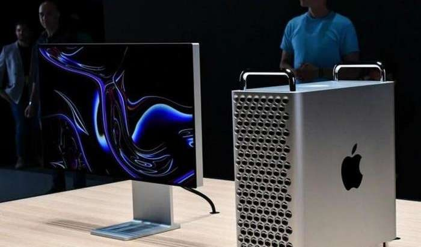

"FIN TECH ABU DHABI" TANLOVIDA O'ZBEKISTON JAMOASI G'OLIB
BO'LDI!
2019-yil 21-oktyabrdan 23-oktyabrgacha Birlashgan Arab Amirligining Abu-Dabi
shahrida butun dunyo bo'ylab 5000 dan ortiq sarmoyador va innovatorlarni
to'plagan eng yirik xalqaro startap festivallaridan biri - MENA FinTech festivali
bo'lib o'tdi.
Batafsil
KOMPYUTERNI FIKR KUCHI BILAN BOSHQARISH STARTAPINI
FACEBOOK SOTIB OLDI.
O'tgan yili qozog'istonlik maktab o'quvchisi fikr kuchi bilan boshqariluvchi
mashina ixtiro qilgan edi. Umuman, dunyo miqyosida fikr kuchidan amaliy
foydalanish bo'yicha turli tadqiqotlar olib borilmoqda.
Batafsil

NARXI UY BILAN BAROBAR KOMPYUTER YANGICHA KORPUSDA,
YANADA QIMMATLASHIB CHIQDI!
O'tgan yilning 3-iyunida Apple yangi avlod Mac Pro statsionar kompyuterini
taqdim etgan edi. Tashqi ko'rinishi sababli ijtimoiy tarmoqlarda ko'plab
masxaralarga sababchi bo'lgan ushbu qurilma dekabrda savdoga qo'yilgan
lekin...
Batafsil